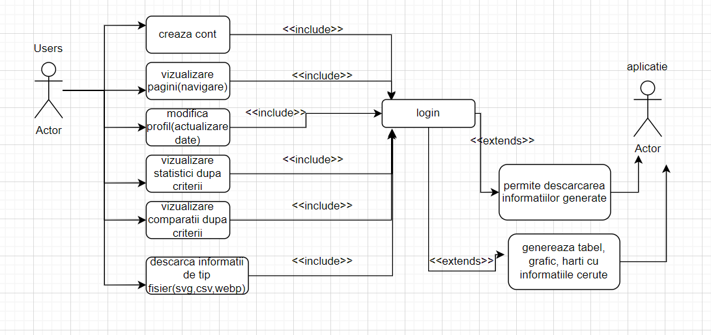

Software-ul specificat este o aplicatie web dezvoltata pentru a vizualiza si compara informatii referitoare la obezitatea populatiei, folosind datele publice furnizate de Eurostat prin intermediul unui API REST propriu. Scopul acestei aplicatii este de a oferi utilizatorilor o modalitate simpla de a accesa, vizualiza si compara datele de obezitate in diferite regiuni geografice, comparand in functie de diferiti ani. Aplicatia ofera mai multe modalitati de vizualizare: tabele, grafice si harti.
Beneficiile acestei aplicatii sunt multiple, de la simplificarea accesului la date relevante, pana la aprofundarea intelegerii si identificarea trendurilor in ceea ce priveste obezitatea la nivelul populatiei in Europa. Obiectivele si scopurile acestui software sunt de a furniza o interfata usor de utilizat, de a permite exportarea vizualizarilor in mai multe formate:
Aceasta aplicatie este asociata cu diferite strategii de afaceri prin faptul ca poate oferi o perspectiva mai clara asupra problemelor de sanatate publica si a trendurilor, ceea ce poate contribui la elaborarea startegiilor de sanatate publica si la imbunatatirea generala a sanatatii populatiei.
Culorile utilizate in aplicatie vor fi considerate identitatea vizuala a paginii web, acestea fiind urmatoarele: #091836 (dark blue), #B0E0E6 (light blue), #00FF00(neon green).
Font-ul contribuie, in egala masura, la identitatea paginii, acesta fiind: 'Josefin Sans', sans-serif.
Icon-urile alese sunt in concordanta cu butoanele specifice, adaugand o nota de sugestivitate, facand mai facila navigarea intre pagini. Acestea sunt importate cu ajutorul https://fontawesome.com/search
Prin utilizarea API-ului propriu, aplicaia extrage datele specifice referitoare la obezitatea populației din baza de date publica a Eurostat.
Eurostat este Biroul European de Statistica si este sursa datelor publice utilizate in aplicatia web specificata in aceasta cerinta a software-ului. Informatii suplimentare despre Eurostat si datele sale statistice pot fi gasite pe site-ul sau oficial:https://ec.europa.eu/eurostat
Pentru o buna intelegere a functiilor aplicatiei, atasam diagramele Use-Case si nivelul 3 al diagramei C4 (Component-level Diagram):
Tipuri de utilizatori:
Acesta este intampinat de formularul de conectare/inregistrare al paginii pentru a se loga sau a-si creea cont. Datele ii vor fi verificate in baza de date, daca exista utilizatorul va deveni logat si va fi redirectionat catre aplicatie, fiind intampinat de "loading-page-ul" aplicatiei ce contine logo-ul creatorilor, urmand sa aiba acces la intreaga aplicatie, navigarea prin aplicatie fiind facilitata de navbar-ul cu meniul aplicatiei ce contine butoanele paginilor.
Acest utilizator este intampinat de "loading-page-ul" aplicatiei, urmand sa fie redirectionat catre pagina "Home". De acolo, prin intermediul navbarului, acesta va naviga printre paginile dorite.
Pentru a asigura o performanta optima si o functionare adecvata a software-ului, este important sa se ia in considerare mediul in care acesta va functiona.
Mediul de operare al proiectului include:
Cativa factori care pot afecta cerintele software-ului sunt:
Aplicatia se bazeaza pe datele publice oferite de Eurostat, iar daca aceastea pot fi incomplete, inexacte sau pot avea modificari neasteptate. Prin urmare, daca acestea vor fi neglijate, si cerintele aplicatiei pot fi afectate.
Deoarece aceast aaplicatie Web implica prelucrarea datelor personale, schimbaile legislative privind protectia datelor personale ar putea afecta cerintele stabilite in aplicatie , cum ar fi securitatea datelor, respectarea confidentialitii.
Accesati: Schite-Design-in-Figma
Pagina web este responsive, aspectul modificandu-se in functie de dimensiunea ecranului. Aplicatia poate fi deschisa de pe telefon,tableta sau laptop (desktop), iar trasaturile au fost gandite pentru a fi atractiva si usor de utilizat pe oricare din aceste device-uri.
Se va folosi o baza de date pentru a retine informatiile despre utilizatori. Aceasta va fi folosita la :
De asemenea, se va folosi baza de date pentru a imorta date necesare din baza de date Eurostat.
Pagina preload cu logo-ul creatorilor (IT.E) se va incarca de fiecare data cand este accesata pagina Home. Aceasta pagina a fost creata astfel: crearea logo-ului ca o pagina HTML folosing CSS pentru styling, urmand apoi transformarea acesteia intr-un gif.
Acesta faciliteaza navigarea intregii aplicatii prin butoane specifice:
Aceasta functie stabileste statutul unui utilizator (autentificat/ neautentificat/ neinregistrat), permitant trecerea de la un statut la altul.
Pagina pune la dispozitie titlu, text relevant contextului obezitatii, impreuna cu restul navbar-ului.
Pagina pune la dispozitie informatii despre scopul paginilor "Statistics" si "Comparison", butoanele "Read More" redirectionand utilizatorii catre aceste pagini, oferindu-le sansa de a vizualiza si compara statistici.
Permite utilizatorilor posibilitatea de a-si actualiza datele personale, avand totodata si scop de securitate, permitand schimbarea parolei.
Redirectioneaza catre o pagina interactiva unde utilizatorul poate filtra tara si anul, pentru a vedea statistici pentru BMI.
Butoanele de tip "Generate" redirectioneaza catre pagini ce permit o vizualizare clara a datelor (in forma aleasa "Generate line"/ "Generate bar"/ "Generate table"/ "Generate map") si permite, de asemenea, exportul generarii printr-un buton "Export" in unul din formatele alese de catre utilizator: CSV, WebP, SVG.
Redirectioneaza catre o pagina interactiva unde utilizatorul are posibilitatea de a compara datele despre obezitate din 2 tari, permitand si alegerea unui an/pe toti anii disponibili, pentru o mai buna intelegere a statisticilor si a trendurilor obezitatii in Europa. De asemenea, butoanele "Generate line"/ "Generate bar"/ "Generate table"/ "Generate map" redirectioneaza catre pagini cu vizualizari ale datelor selectate, permitand si de aceasta data exportul rezultatelor in formate alese de utilizator: CSV, SVG, WebP.
Redirectioneaza catre pagina cu formularul de login/register, oferind ocazia utilizatorilor de a-si schimba statutul intre autentificat/neautentificat. De asemenea, ajuta serverul pentru a sti ce date se modifica in baza de date.
Sunt necesare urmatoarele cerinte privind securitatea si confidentialitatea: